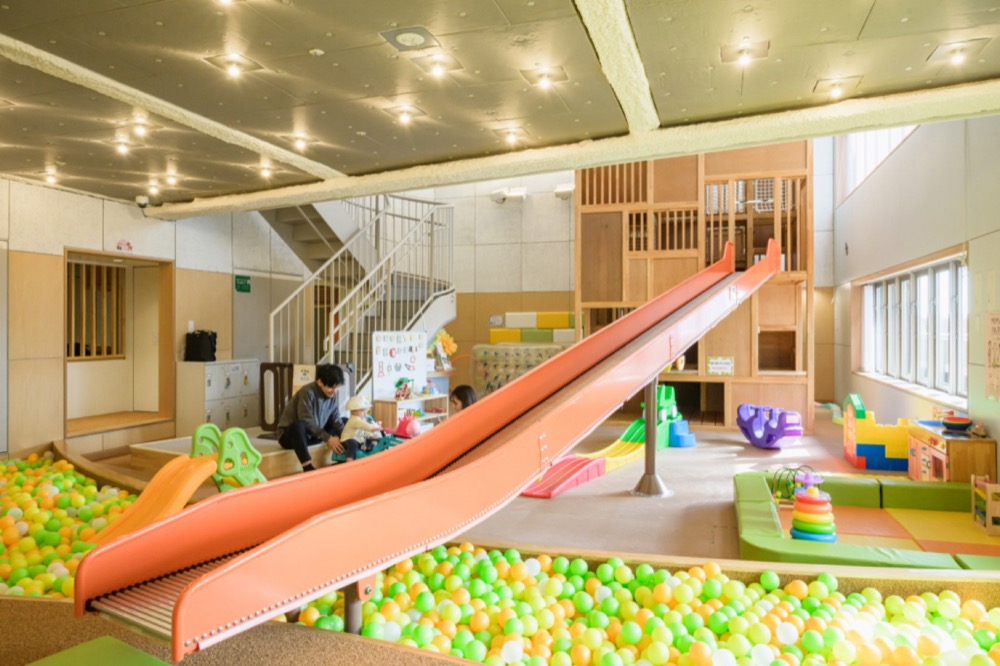
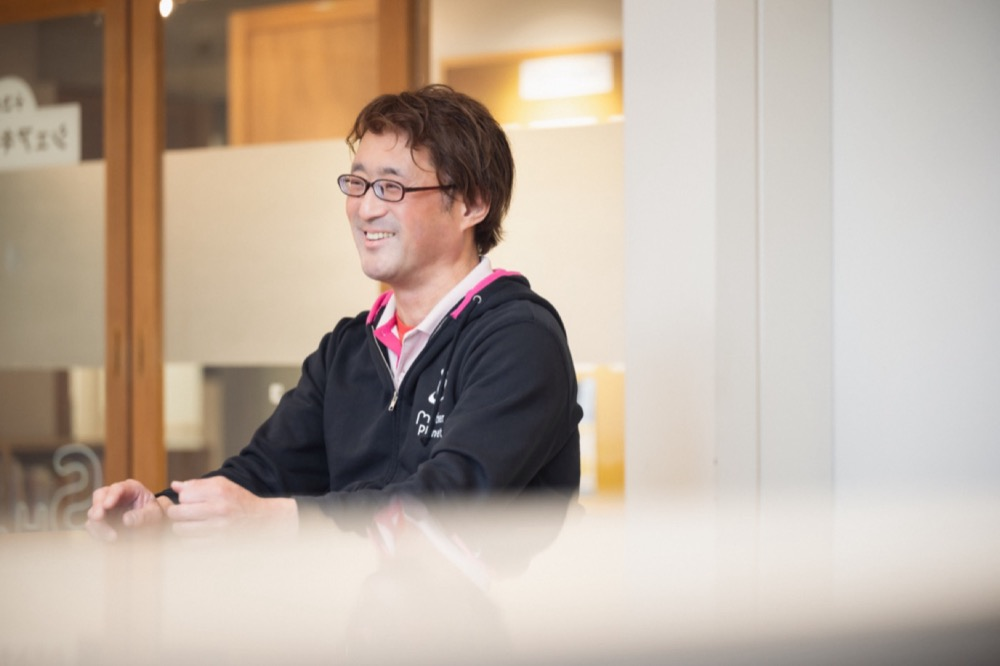
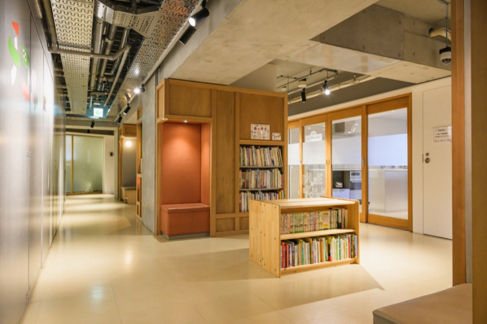
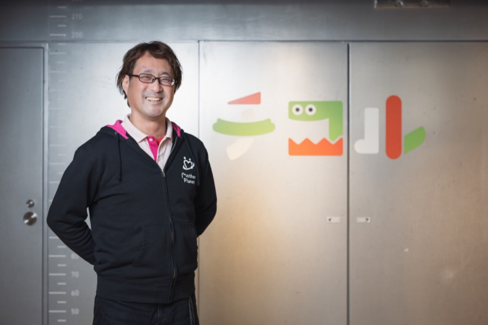

地域と交わりながら、子育て環境をつくる
藪本 敦弘
株式会社マザープラネット 代表取締役
1977年、北九州市生まれ。神戸大学を卒業後、システムエンジニア、法人営業、新規事業開発などを経験。2009年にはぐるなびの事業戦略部門に在籍。2011年、株式会社マザープラネットを創業し、病児保育「オハナ☆キッズケア」を皮切りに、認可保育園や学童を開設し、地域密着の子育て環境を構築。保育士資格を持ち、現在はグループ経営および後継者育成に注力している。
企業サイトを見るTRACK 01
地域と交わりながら、子育て環境をつくる

千葉県流山市。マザープラネットは、「地域深化」と「交わる」を旗印に掲げ、認可保育・病児保育・放課後児童健全育成・コミュニティ創出・メディア事業などを幅広く展開する、子育て環境創出企業である。
藪本は、事業を拡大しながらも「地域に根ざすこと」に軸足を置き続けてきた。震災を契機に強く芽生えた「家族のそばで働きたい」という原体験が、その根底にあるという。
一見すると穏やかな語り口の持ち主だが、その内には強い信念と熱量を秘めている。地域の子どもたちを見つめる視線は、常にまっすぐだ。
TRACK 02
保育に携わる人々に寄り添う決意

彼の経歴は波乱に富んでいる。中学受験を経て進学した学力至上主義を掲げる中高一貫校の校風に違和感を抱き、中学3年時に家出。ホームレス同然の生活を送った時期もあったという。その後復学し、最終的には高校を中退したものの猛勉強の末、神戸大学に合格した。 しかし当時は就職氷河期。就職活動は厳しいものだったが、「社会に期待しすぎず、自分でなんとかする力が身についた」と振り返る。卒業後、IT企業にてシステムエンジニアや法人営業、新規事業の立ち上げを経験した藪本は、次第に経営という舞台に目を向けるようになる。
そんななか2011年3月11日。藪本は都内で東日本大震災に遭遇した。家族の無事が確認できたのは、地震が発生してから数時間経ってからのことだった。安堵とともに湧き上がった「地元回帰」の想いから、藪本は「地元で起業する」という道へと突き動かされることとなった。
もともと起業志向があり経営大学院でMBAの取得を目指していた。そうした状況での起業への想いから、昼は会社員、夜は経営大学院の学生、そして深夜には起業人として自社の事務所で起業準備に明け暮れる日々を、4か月以上にわたって続けた。終電後の柏駅で夜明けまで資料を作り、朝を迎えてオフィスへ向かう…当時の睡眠時間は人生で2番目に短かったという。心の奥底を支えたのは「この街の子どもたちに安心できる環境を創りたい」という揺るがぬ信念だった。


TRACK 03
地域に必要とされる存在を目指して
現在マザープラネットは、流山市・柏市を中心に、子育てに関する支援を包括的に提供している。その最大の強みは「病児保育」という現代に必要なインフラを自ら創出し、その経験を通じて見えてくる地域ニーズを事業に反映している点にある。
地域の子育てとその多様性に寄り添い、未来を育む。子どもは明日へ続く希望であり、社会の礎だ。多様な家族と地域の人々が交わり、「子育てが楽しい」と語り合える街をつくる…それがマザープラネットの流儀だと藪本は言う。異なる想いと生き方を尊重し、子どもから大人まですべての人がイキイキと暮らせる幸せな街を東葛エリアに描き続けている。